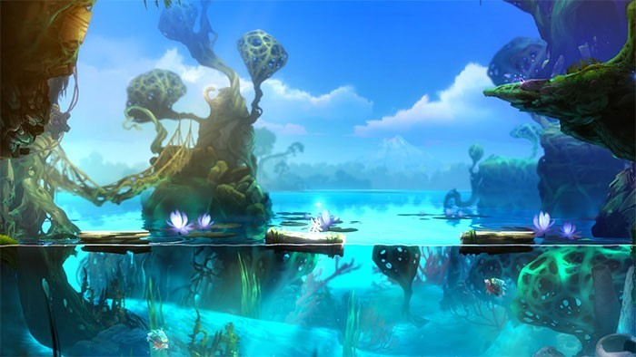
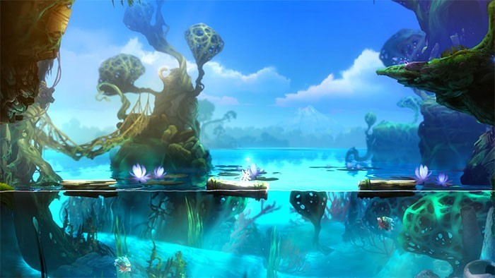

ORI AND THE BLIND FOREST
Ori and the Blind Forest é uma jornada delicada e poderosa que combina arte, emoção e desafio em uma experiência inesquecível. Desenvolvido pela Moon Studios, o jogo apresenta um mundo mágico e melancólico, onde o jogador assume o papel de Ori, um pequeno espírito guardião que precisa restaurar o equilíbrio da floresta de Nibel após uma tragédia devastadora.
Visualmente, Ori and the Blind Forest é deslumbrante. Cada cenário parece pintado à mão, com camadas de luz, cor e movimento que criam uma floresta viva e pulsante. A trilha sonora, composta por Gareth Coker, acompanha cada passo com precisão emocional, elevando momentos de tensão, descoberta e ternura com melodias que permanecem na memória.
A jogabilidade é fluida e desafiadora. O jogo mistura elementos de plataforma e Metroidvania, exigindo precisão nos saltos, reflexos rápidos e estratégia para superar obstáculos. Conforme Ori desbloqueia novas habilidades, o mundo se abre em caminhos antes inacessíveis, incentivando a exploração e recompensando a curiosidade com segredos e melhorias.
Com sua arte tocante, trilha sonora envolvente e narrativa universal, Ori and the Blind Forest é mais do que um jogo: é uma experiência emocional que permanece viva muito depois que a tela escurece.